My Inspirations!

 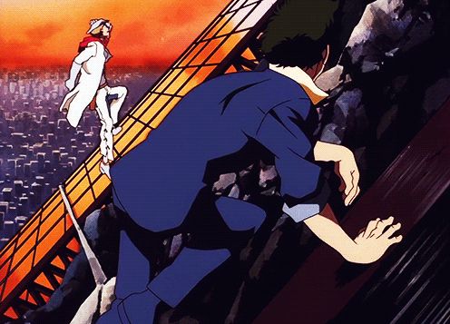
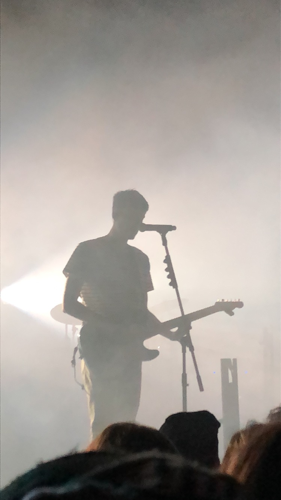
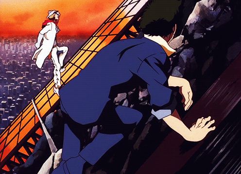
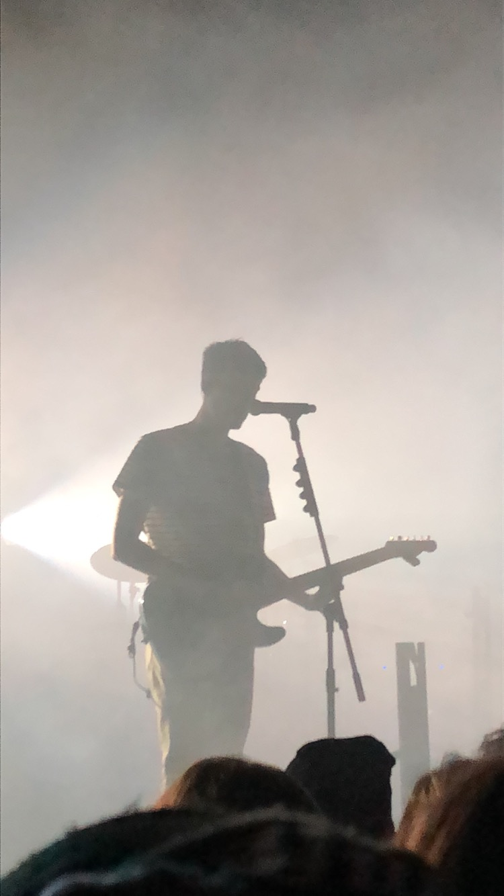
 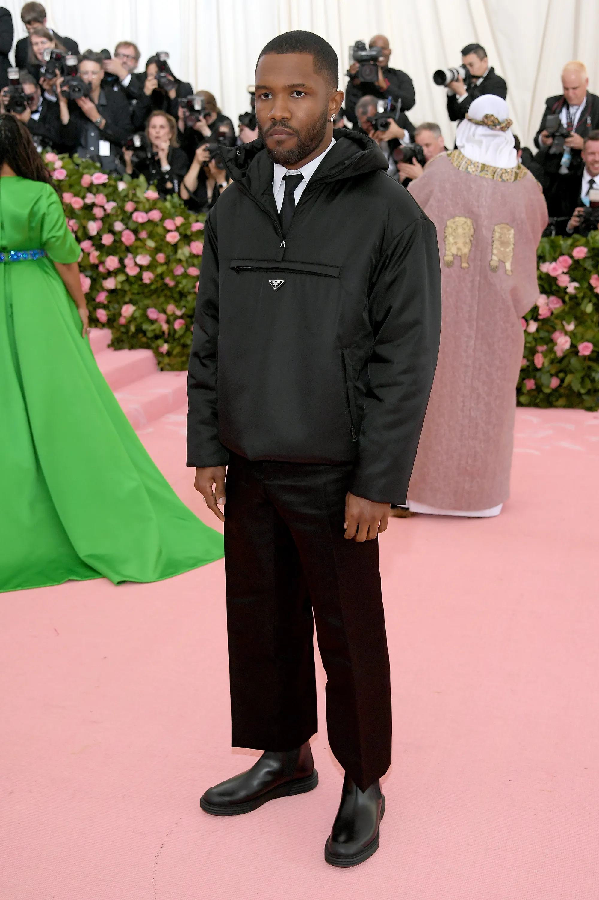
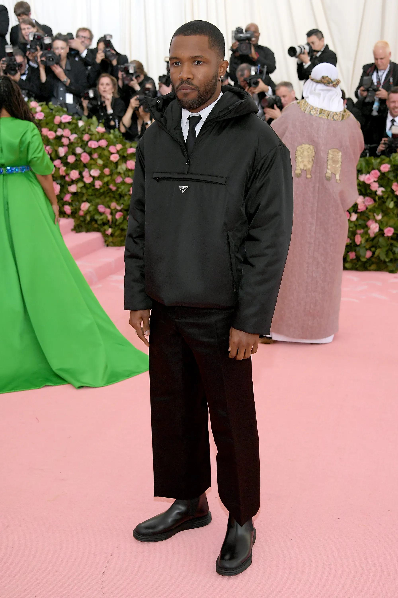
While growing up, I've been exposed to a lot of different media through the many people I've had in my life, including my parents, my closest friends, and fandoms I've been a part of for a long time. A lot of my own personal taste in not only how I consume media, but how I want to pursue it, how I percieve it, and the types of media in general have influenced who I am as an artist and as a person just as much as the people I have in my life have. This page is dedicated to some of those artists and works that I love so dearly and that made me want to pursue a creative field, as well as my influences for what I want to do for the rest of my life - whether it be sound design for an animation studio, mixing and mastering for one of my favorite artists and artists all around the world, or working live shows of all types of genres. My favorite work of fiction of all time is One Piece and the way it has infleunced my creative strive for more cannot be understated, along with being the greatest odyssey story of our time. Jujutsu Kaisen and Chainsaw Man have been my newest favorites, being from the next generation of anime/manga to prosper outside of the golden age. Cowboy Bebop is a gigantic influence on me not only due to its stunning cinematography and characters, but also how the world flows around the music so masterfully woven in by SEATBELTS, the band who makes a large majority of the jazz punk music for the series. My favorite music artists of all time, however, all come from my closest friends' influences on me, pushing me to break out from the shell I used to be in as a kid to listen to a much wider variety of music. EDEN (Jonathan Ng) has been a personal favorite of mine and I've seen him multiple times in concert all around the country, and I can't wait to see him again. Kendrick Lamar has been my favorite rapper and hip hop artist for years now, and my introduction to him pushed me much heavier into rap and hip hop, which has become one of my favorite genres with how unbelievably versatille it can be. Another huge influence on me has been Frank Ocean, who pushed the boundaries of what pop/RnB music can be with his widely changing and often stripped down production that always relies heavily on his beautiful voice. All of these are just the tip of the iceberg of the artists I listen to and media I consume, with the margin growing wider every day.
 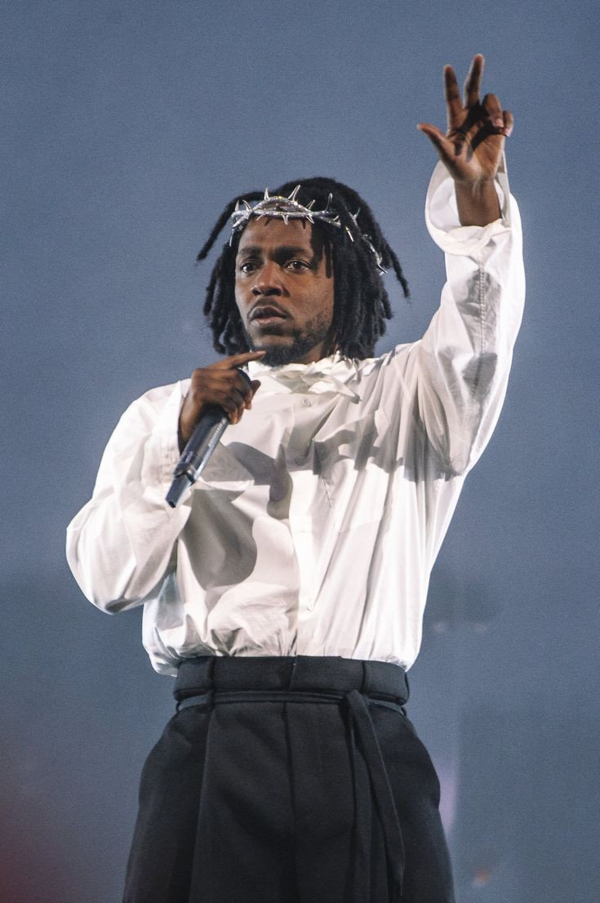
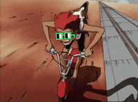
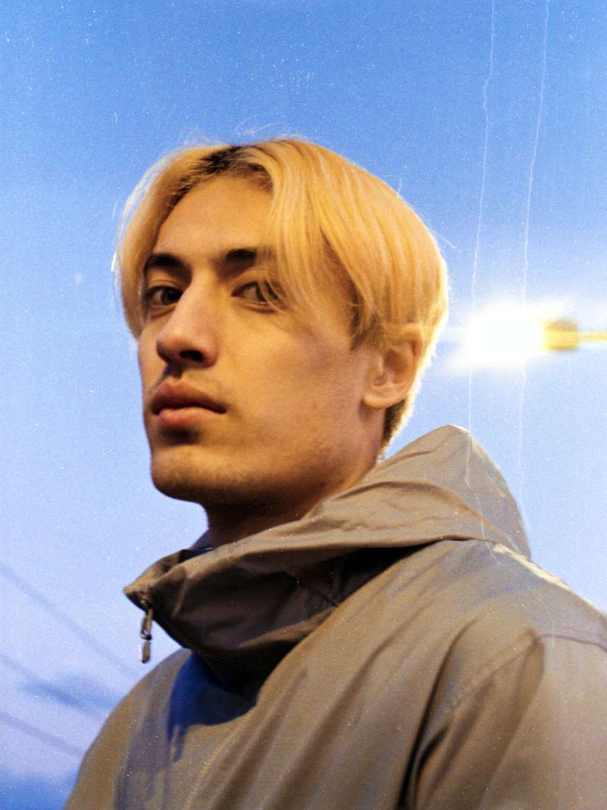
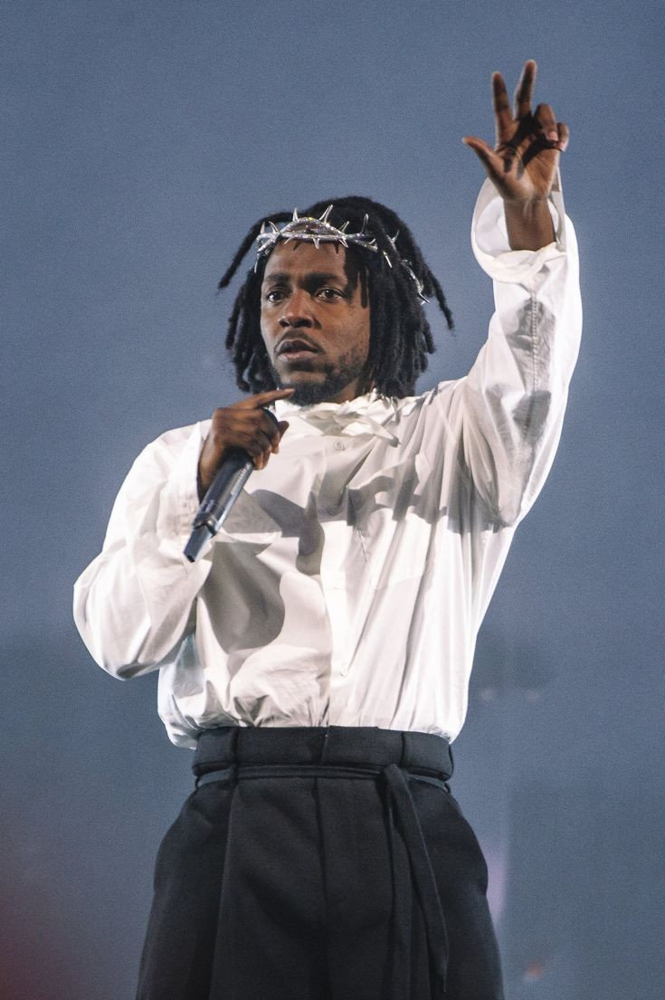
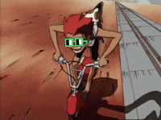
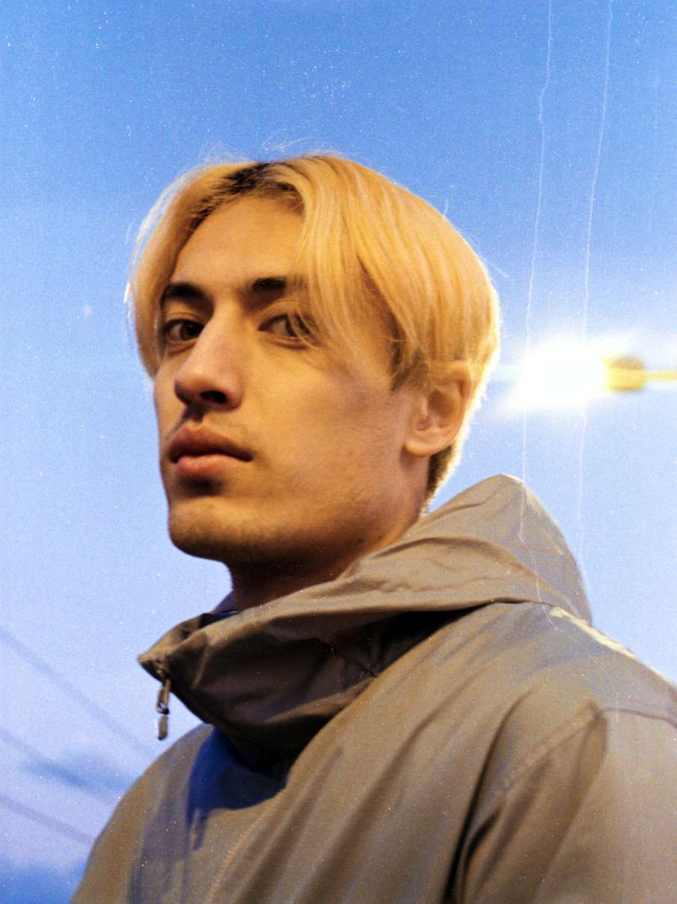
 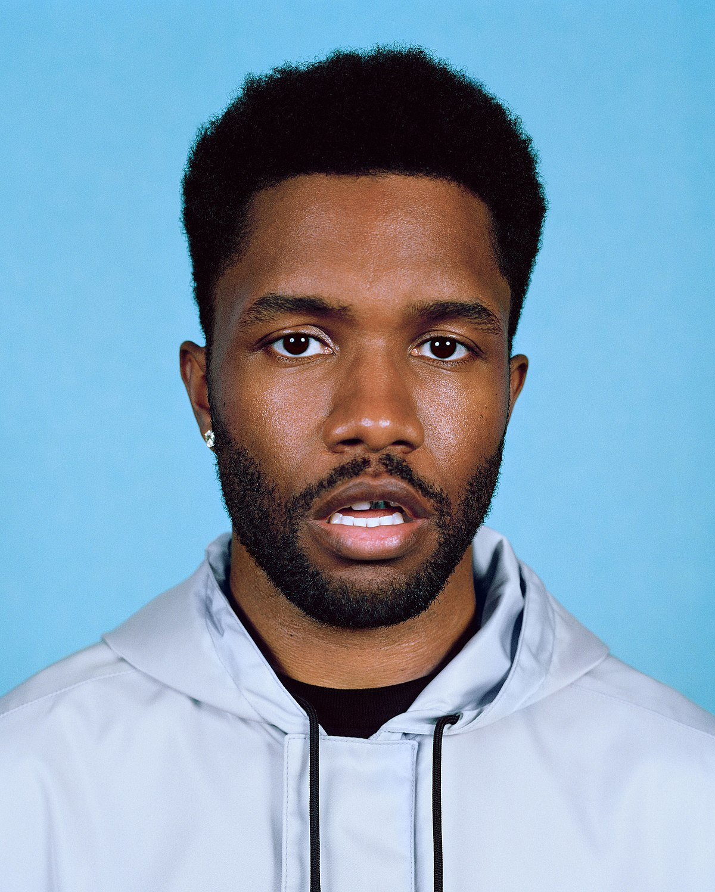
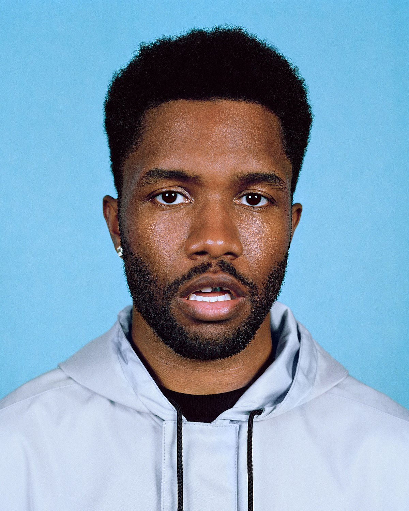